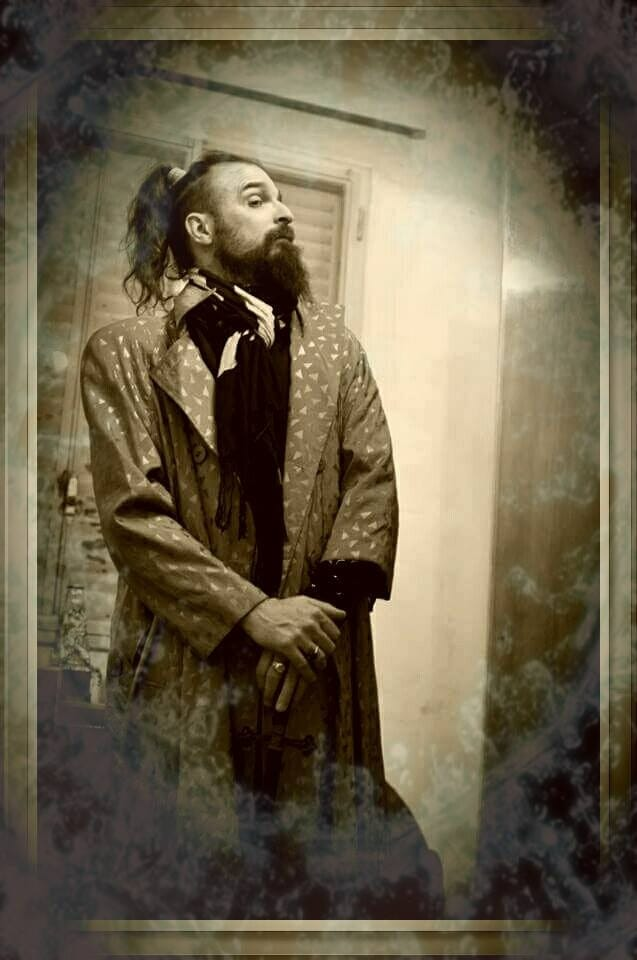
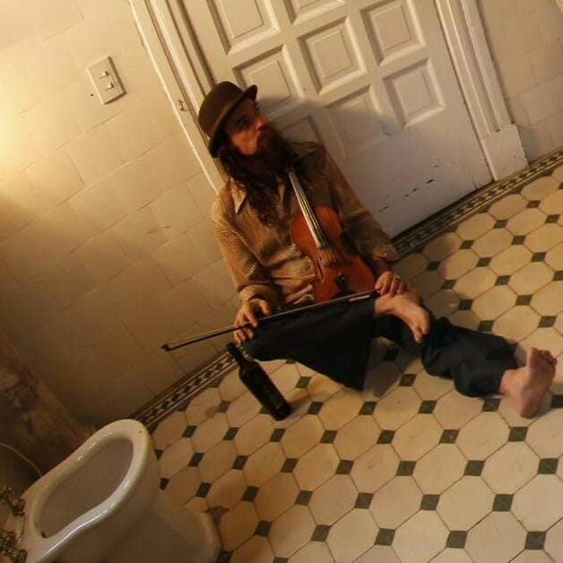
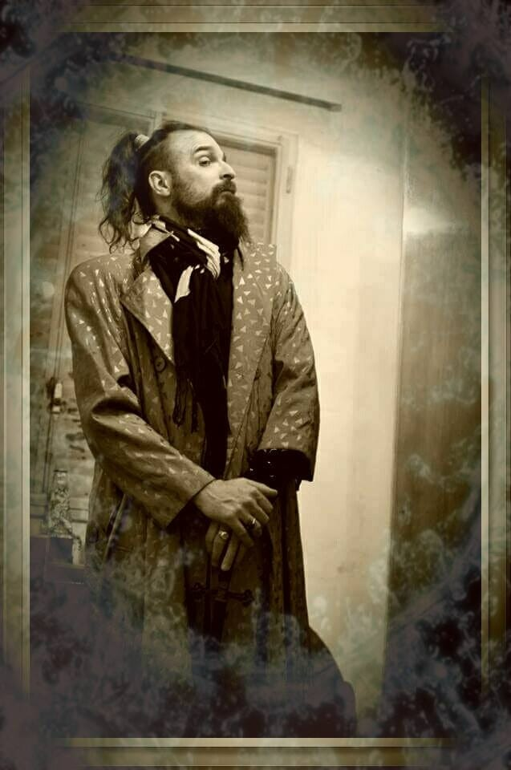
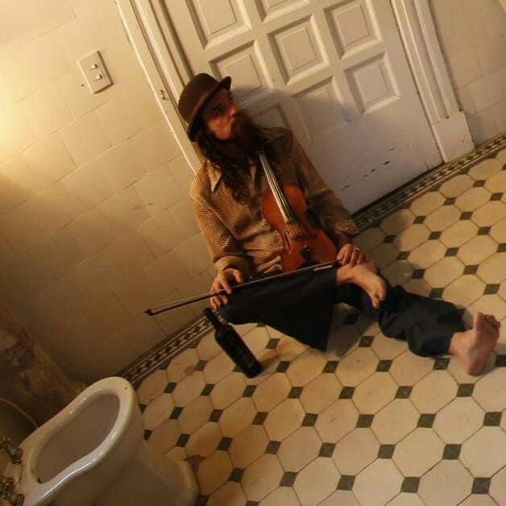
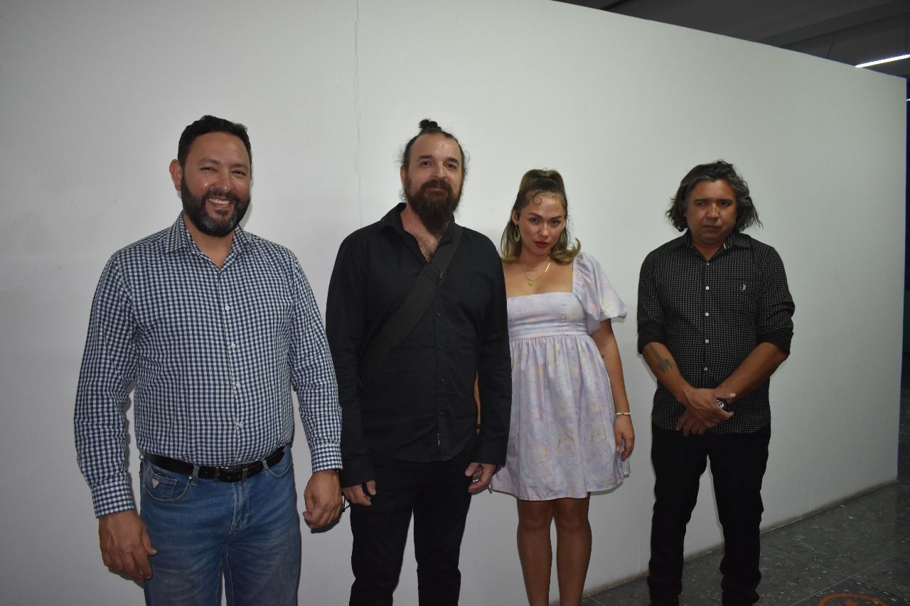
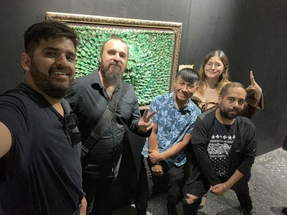
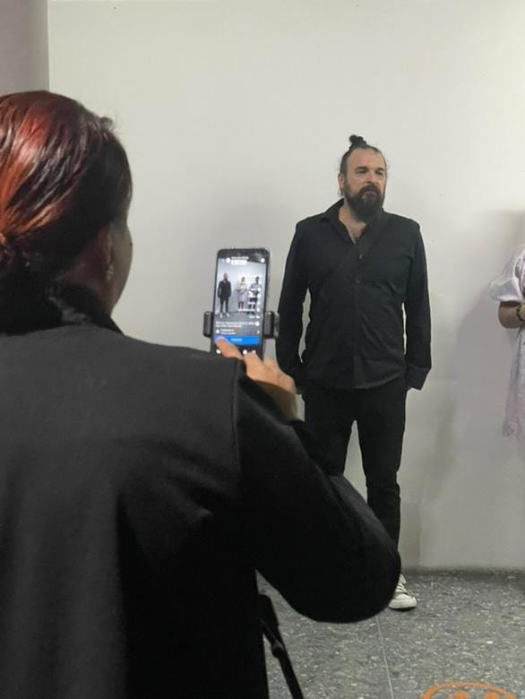

Sobre mí
Soy Juan Mondillo. Desde 1994 trabajo de manera constante en arte feérico e imaginería. Mi recorrido está hecho de taller, materiales y oficio, y con el tiempo me llevó a participar en ferias, muestras y espacios culturales dentro y fuera de Argentina.
Estudié Perito Mercantil y Antropología. Lo académico acompaña, pero mi aprendizaje principal fue siempre el trabajo diario: hacer, observar, probar y volver a empezar.
La música también es parte de mi camino. Toco bajo eléctrico desde 1984 y participé en proyectos muy distintos entre sí. Lo plástico y lo musical conviven como dos formas de seguir investigando.
 



Currículum
Estudios
- Perito Mercantil
- Antropología
Premios (selección)
- 2001 1º Premio Papel Maché — F.E.R.I.A.R.
- 2003 1º Premio Resinas — F.E.R.I.A.R.
- 2004 1º Premio Resinas — F.E.R.I.A.R.
- 2007 1º Premio Muñecos — Rural de Palermo
Exposiciones y ferias (selección)
- 1996 Museo La Loma, Córdoba
- 1999–2000 S.C.U.M., Bariloche
- 2000 Festival Celta, Auditorio Belgrano
- 2001–2004 F.E.R.I.A.R., Córdoba
- 2018–2019 España: Galicia, Barcelona y Madrid
- 2024–2025 Nogales, México / EE.UU.
Galería


